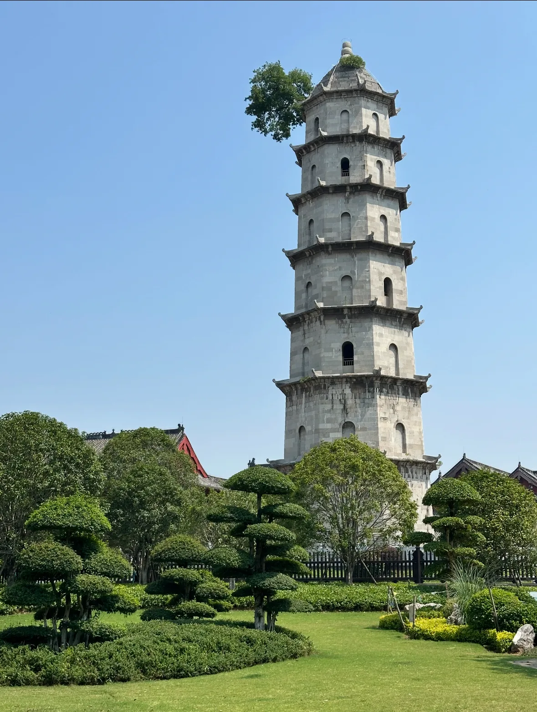
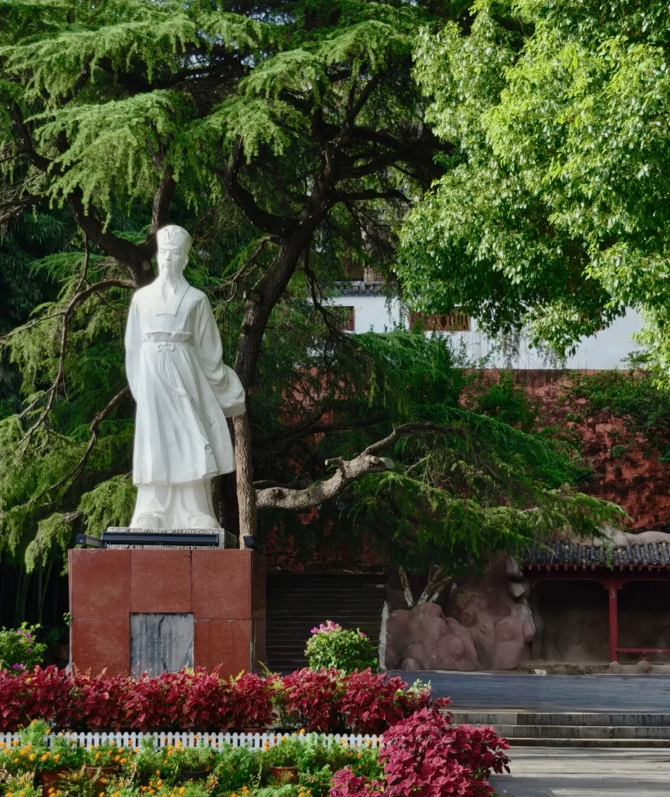

东坡赤壁
位于黄州，与苏东坡谪居黄州的经历和作品有关。想了解黄冈的东坡文化，可以从这里开始。
黄冈是我长大的地方。这页放了几张家乡照片，也介绍我想推荐的景点和食物。
黄冈位于湖北东部。黄州有与苏东坡有关的历史文化景点，也有遗爱湖这样的城市风景；往北还有大别山。对我来说，黄冈首先是我和家人生活的地方。



位于黄州，与苏东坡谪居黄州的经历和作品有关。想了解黄冈的东坡文化，可以从这里开始。
黄州城区的湖景区。这里适合散步，也能看到黄冈比较日常的一面。
位于罗田县的大别山景区。如果想看看黄冈的山景，可以把它列进行程。
热干面是湖北有代表性的早餐，黄州烧梅是黄冈当地的小吃。这两样是我介绍家乡时会提到的食物。